Техника КНС
Наземная, воздушная и космическая техника Конфедерации Независимых Систем
Наземная техника
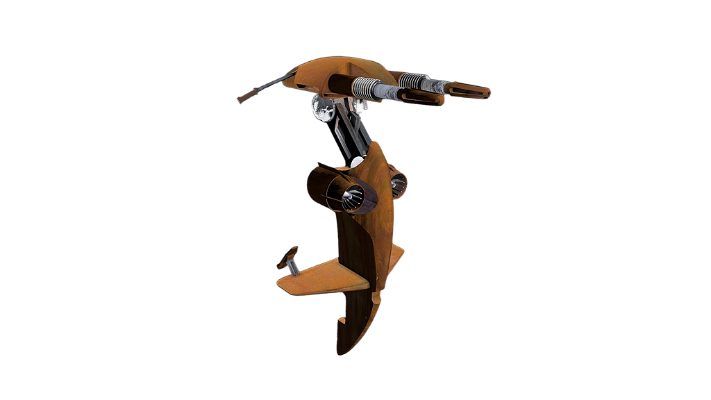
STAP — одноместная воздушная платформа
Одноместная воздушная платформа (STAP — Single Trooper Aerial Platform), также известная как STAP-1 или просто STAP — проворная летающая машина, разработанная для использования боевыми дроидами B1 Торговой Федерации и Конфедерации. Использовалась для разведывательных и противопехотных операций. Открытая конструкция платформы делала пилота уязвимым, что заставляло полагаться на скорость и манёвренность для уклонения от огня противника.
- Экипаж: 1 дроид
- Вооружение: Сдвоенная бластерная пушка
- Тип: Репульсорная платформа
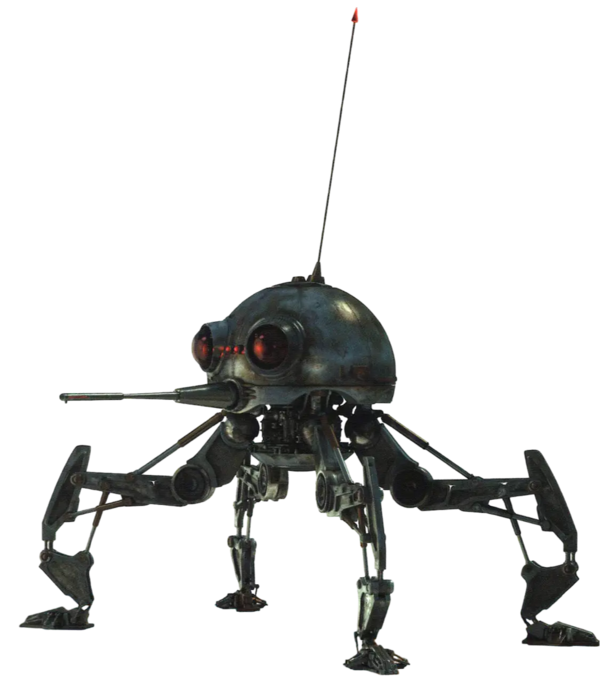
DSD1 — карликовый дроид-паук
Карликовый дроид-паук DSD1 (DSD1 dwarf spider droid), также известный как подземный дроид-паук за способность проникать в узкие пространства — модель боевого дроида, разработанная компанией Оружейные Цеха Бактоид. Дроид был вооружен мощной лазерной пушкой, способной как к беглому огню, так и к стрельбе мощными одиночными зарядами. Многие из них были оснащены механизмом самоуничтожения.
- Производитель: Оружейные Цеха Бактоид
- Вооружение: Мощная лазерная пушка
- Особенности: Механизм самоуничтожения
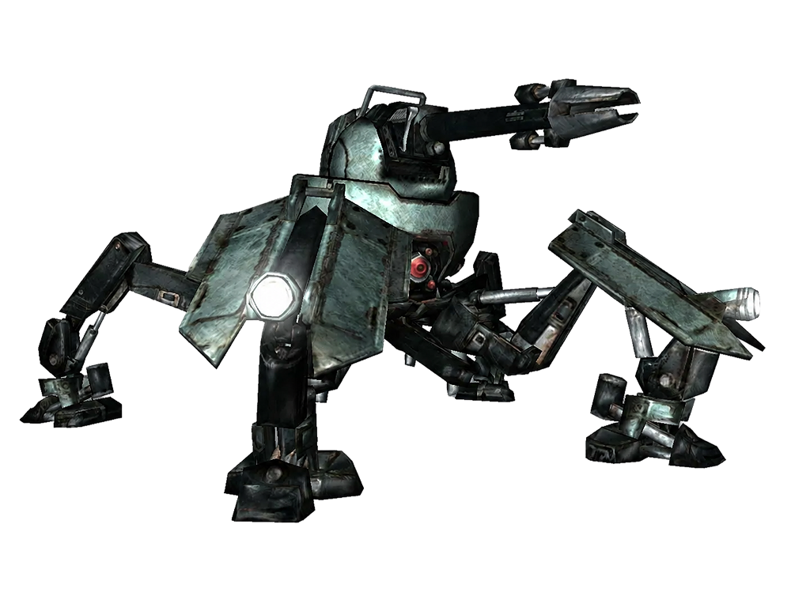
A-DSD — усовершенствованный дроид-паук
Улучшенный карликовый дроид-паук A-DSD — версия DSD-1 с лучшей бронёй и вооружением, способная работать в полной темноте. Тяжёлая бластерная пушка была способна пробивать броню лёгкой и средней бронетехники Республики, а гранатомёты являлись эффективным противопехотным средством. Бронещиты на передних ногах делали машину неуязвимой для большей части тяжёлого вооружения.
- Тип: Улучшенный дроид-паук
- Вооружение: Тяжёлая бластерная пушка, гранатомёты
- Особенности: Бронещиты, работа в темноте
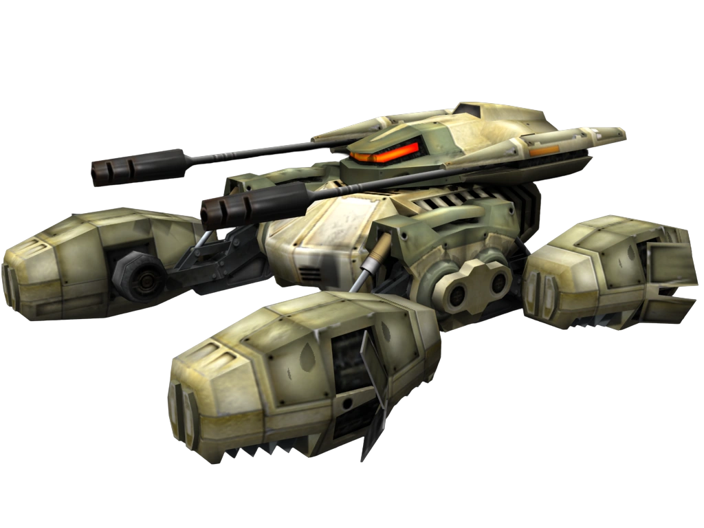
GAT — наземный бронированный танк
Наземный бронированный танк (GAT) — лёгкий репульсорный танк, использовавшийся в начале Войны клонов как быстроходный атакующий танк. Его основным противником был республиканский штурмовой танк TX-130. Лучше всего GAT показал себя в разведке и тактике быстрого нападения из-за лёгкой брони.
- Производитель: Оружейные Цеха Бактоид
- Вооружение: 2 средних лазерных орудия, 2 ракетные установки
- Тип: Лёгкий репульсорный танк
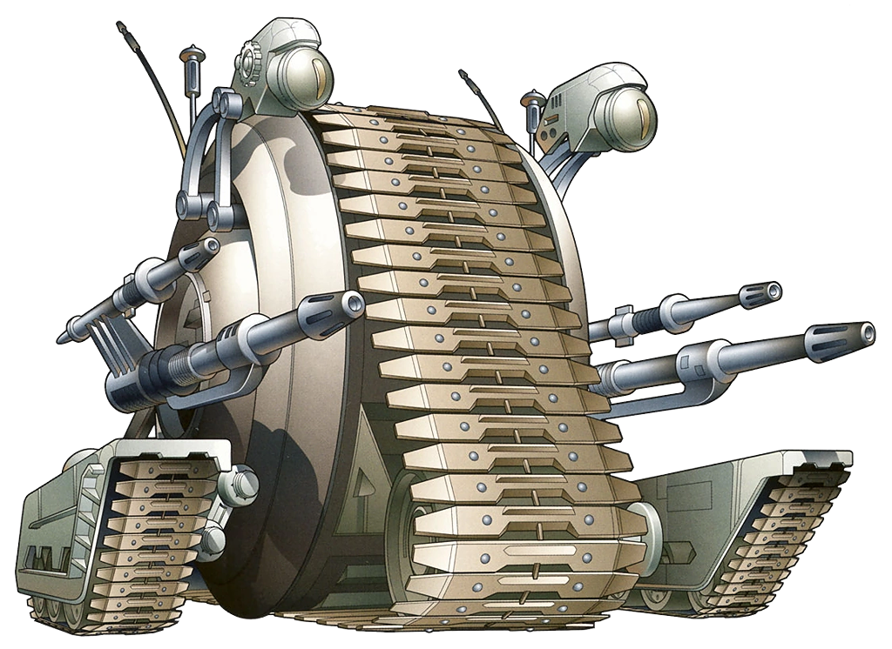
NR-N99 «Убеждающий»
Дроид-танк NR-N99 типа «Убеждающий» — танк КНС, впервые использованный против Великой армии Республики во время битвы на Джеонозисе. Большую серию и распространенность танку принесла его универсальность, неприхотливость и возможность быстрой смены вооружения. Танк обладал отличной проходимостью в густых лесах, водной и болотистой местности.
- Тип: Дроид-танк
- Особенности: Универсальность, быстрая смена вооружения
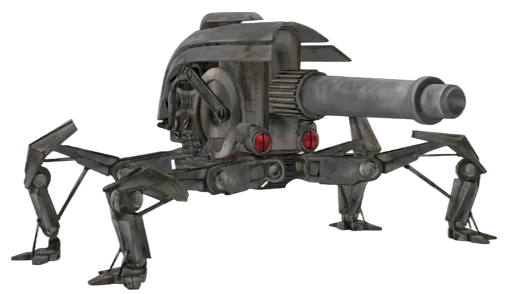
J-1 — полуавтономная протонная пушка
Полуавтономная протонная пушка J-1 — артиллерийское орудие КНС, используемое в годы Войн клонов.
- Тип: Артиллерийское орудие
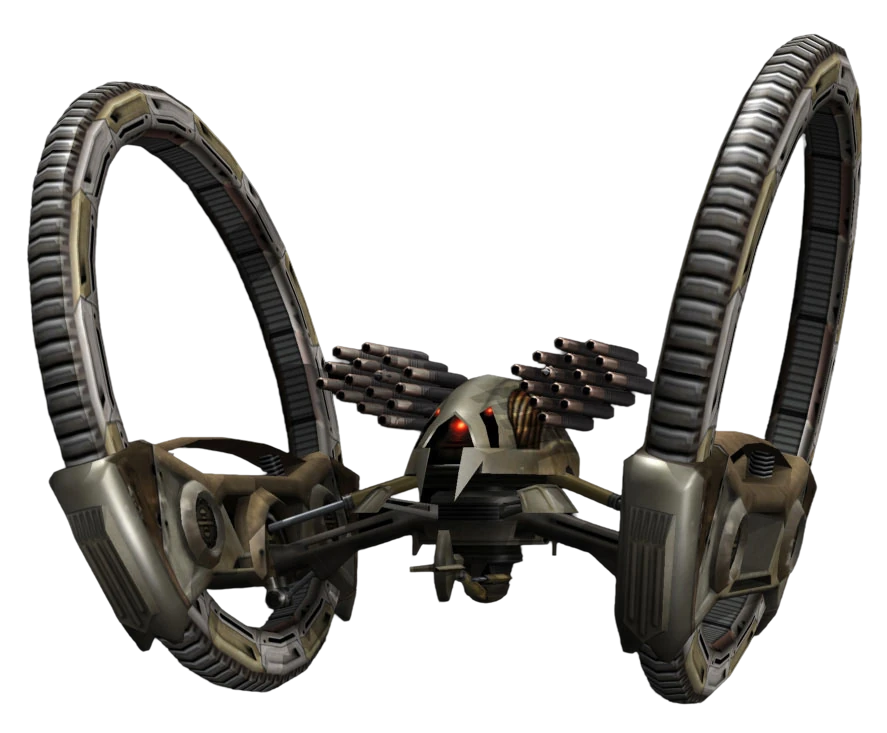
IG-227 «Огненный град»
Дроид-танк IG-227 типа «Огненный град», также известный как колёсный дроид — боевая машина, представлявшая собой мобильную ракетную платформу. Передвигался на двух больших колёсах, что давало возможность действовать практически на любой поверхности. Основным вооружением являлись ракетные пусковые установки залпового огня по 15 самонаводящихся ракет каждая.
- Производитель: Машиностроение Хаор Челл
- Вооружение: 2 ракетные установки (по 15 ракет), спаренная бластерная пушка
- Особенности: Колёсный движитель
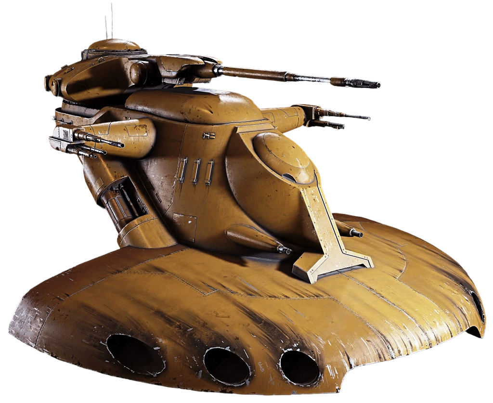
AAT — бронированный штурмовой танк
Бронированный штурмовой танк (AAT) — основная наступательная бронетехника Торговой Федерации. AAT широко использовались для уничтожения пехоты и техники врага. После начала войны клонов, AAT в огромных количествах поставляла и использовала на поле боя Конфедерация. Танки имели ракетные установки, тяжёлые противопехотные пушки и мощное противотанковое орудие на вращающейся башне.
- Экипаж: 4 дроида B1
- Вооружение: Ракетные установки, тяжёлые пушки, противотанковое орудие
- Тип: Средний штурмовой танк
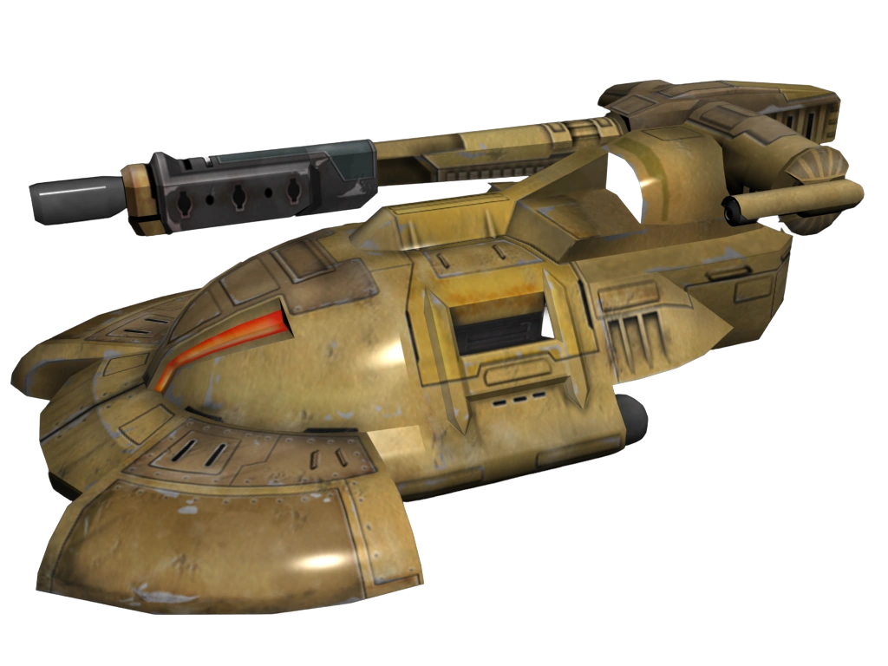
HAG-M — тяжёлая артиллерийская пушка
HAG-M, также известная как тяжёлая артиллерийская пушка или миномётный танк — мобильное репульсорное артиллерийское орудие. Минометная пушка была достаточно мощной, чтобы легко уничтожать шагоходы Республики. Имел хорошую броню, что делало его устойчивым к лазерным пушкам, но также приводило к плохой скорости и маневренности.
- Тип: Мобильная артиллерийская установка
- Вооружение: Мощная миномётная пушка
- Особенности: Тяжёлая броня, малая скорость
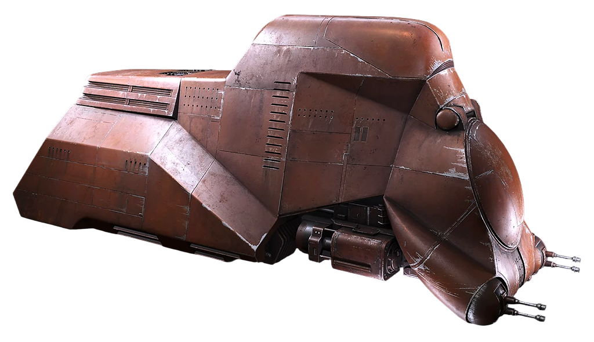
MTT — многоцелевой транспорт
MTT (Multi-Troop Transport) — транспорт, предназначенный для перевозки боевых дроидов и доставки их к месту сражения. Тяжёлое репульсорное транспортное средство может перевозить до 112 обычных боевых дроидов B1 или до 20 дройдек. Управляется специальными OOM дроидами.
- Вместимость: 112 дроидов B1 или 20 дройдек
- Управление: OOM дроиды
- Тип: Тяжёлый репульсорный транспорт
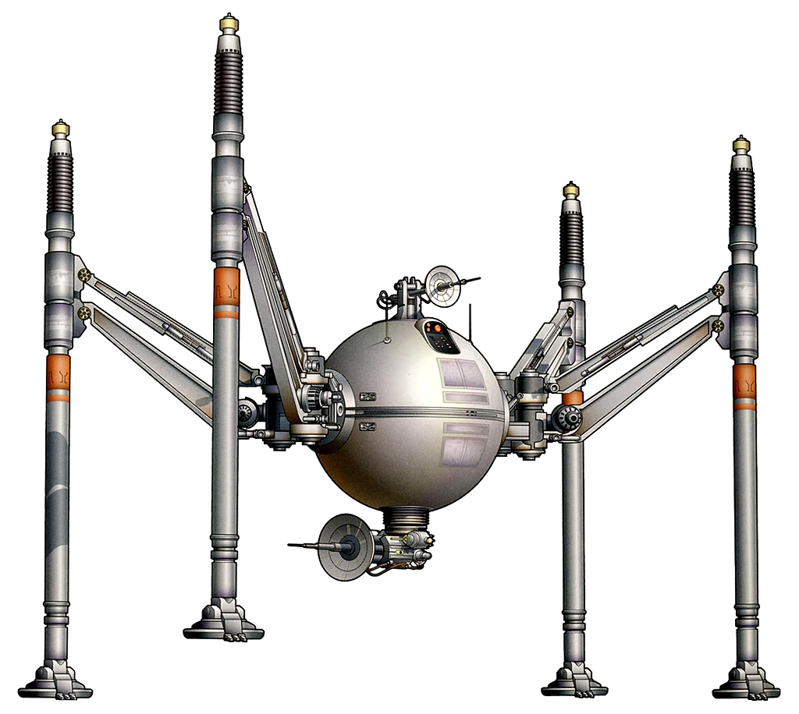
OG-9 — самонаводящийся дроид-паук
Самонаводящийся дроид-паук OG-9 — творение «Оружейных Цехов Бактоид», состоявшее на вооружении КНС. Имел тяжелую броню и использовался как против пехоты, так и против тяжёлой техники. Благодаря своему высокому росту дроид мог накрывать огнем довольно обширные площади. Главным оружием была лазерная пушка, эффективно снимавшая защитные экраны и уничтожавшая тяжёлую технику.
- Производитель: Оружейные Цеха Бактоид
- Вооружение: Тяжёлая лазерная пушка, противопехотная пушка
- Особенности: Ядерный реактор
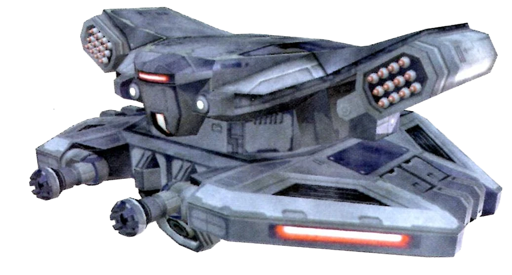
Protodeka
Протодека — боевой дроид в форме репульсорной оружейной платформы, производившийся компанией «Индустрии Джеонозиса». Была вооружена тяжёлыми турболазерами и смертоносными установками дальнобойных самонаводящихся ракет. Создана как мобильное наземное осадное орудие, медлительная и тяжёло бронированная.
- Производитель: Индустрии Джеонозиса
- Вооружение: Турболазеры, самонаводящиеся ракеты
- Особенности: Сейсмический излучатель, клешня
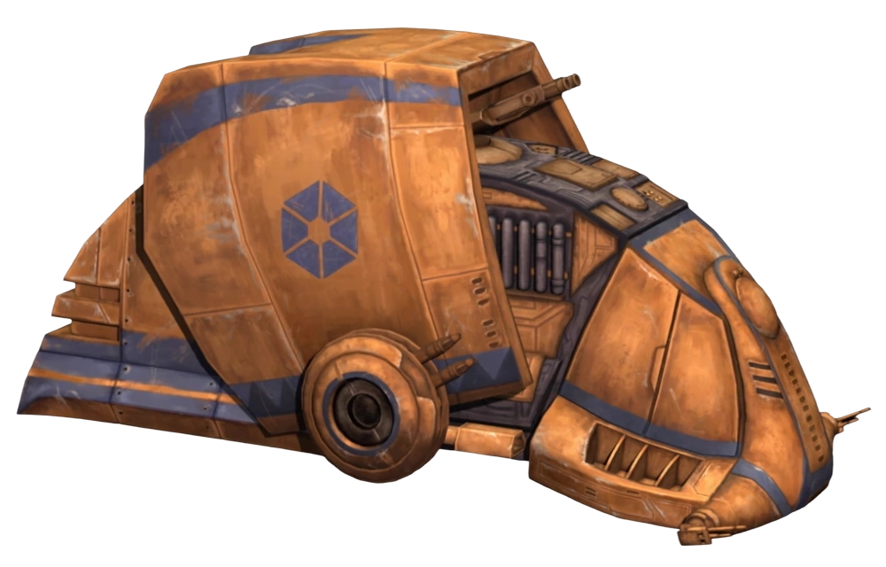
Super Tank
Супертанки были оснащены двумя скорострельными ракетными установками наверху и четырьмя сдвоенными противопехотными бластерами по бокам снизу корпуса. Управлялся двумя дроидами. Имел настолько крепкую лобовую броню, что ни одно оружие (за исключением светового меча) не смогло нанести ей урон.
- Экипаж: 2 дроида
- Вооружение: Скорострельные ракетные установки, противопехотные бластеры
- Особенности: Крепкая лобовая броня
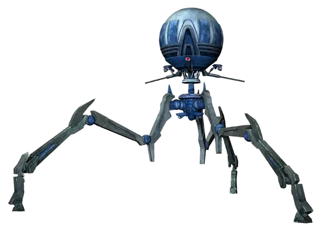
Octuptarra — боевой три-дроид
Боевые дроиды типа «Октаптарра» — усовершенствованные боевые автоматы, использовавшиеся Техносоюзом и КНС. Трёхногие паукообразные автоматы имели большую шарообразную голову с лазерными турелями. Фоторецепторы давали круговой обзор, а шарнирный вращающийся блок позволял незамедлительно открывать огонь. Существовали вирусные варианты, заполненные газообразным вирусом.
- Высота: 3,6 м
- Вооружение: 3 лазерные турели
- Особенности: Круговой обзор, вирусные варианты
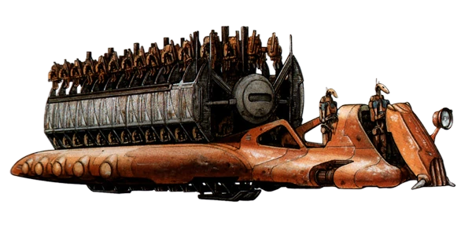
Troop Transport — транспортёр дроидов
Репульсорное транспортное средство, использовавшееся Торговой Федерацией для переброски боевых дроидов типа B1. Облегченный вариант MTT, не нёс вооружения и тяжелой брони. Мог перевозить до 112 дроидов B1 или до 20 дройдек. Управлялся двумя дроидами-водителями.
- Вместимость: 112 дроидов B1 или 20 дройдек
- Управление: 2 дроида-водителя
- Особенности: Облегчённая версия MTT
Воздушная техника
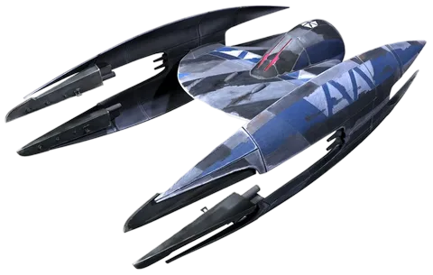
Vulture-class — дроид-истребитель «Стервятник»
Боевой дроид-истребитель с изменяемой геометрией модели I, или истребитель «Стервятник» — истребитель, управляемый дроидным центральным процессором. Имел компактный корпус, множество огневых точек и внешний облик насекомого. Нёс четыре бластерные пушки и две пусковые установки для энергетических торпед. Мог трансформироваться в шагающую орудийную платформу.
- Производитель: Машиностроение Хаор Челл
- Вооружение: 4 бластерные пушки, 2 торпедные установки
- Скорость: 1 200 км/ч
- Особенности: Трансформация в шагоход
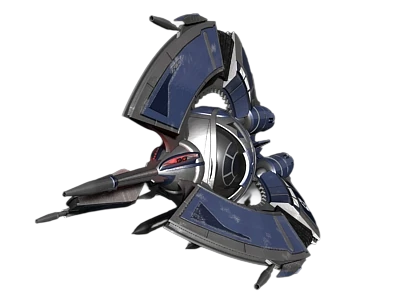
Tri-fighter — дроид-истребитель
Три-дроид истребитель или просто три-истребитель — быстрый и манёвренный истребитель, использовавшийся КНС в массовых количествах. Вооружение составляли одна тяжёлая лазерная пушка, три лёгких и боевые ракеты, благодаря чему мог сражаться на равных с республиканскими истребителями ARC-170 и V-крылом.
- Производитель: Colla Designs / Phlac-Arphocc Automata
- Вооружение: Тяжёлая лазерная пушка, 3 лёгких пушки, ракеты
- Особенности: Высокая манёвренность
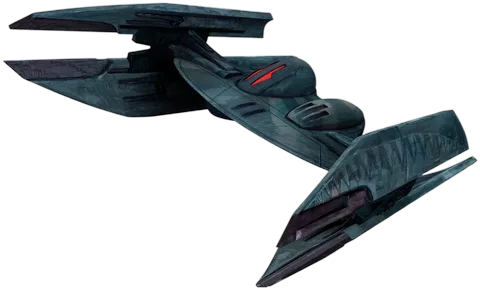
Hyena-class — дроид-бомбардировщик
Дроид-бомбардировщик типа «Гиена» — модель дроидов-истребителей, основанная на идее дроидов с изменяемой геометрией. Были предназначены для массивных воздушных налётов на противника. Широко использовались силами КНС против войск Республики во время Войн клонов.
- Производитель: Оружейные Цеха Бактоид
- Тип: Дроид-бомбардировщик
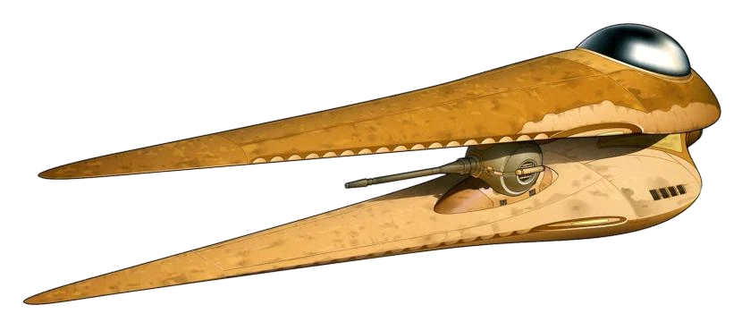
Nantex-class — территориальный истребитель
Территориальный оборонительный истребитель класса Нантекс, также известный как «носо-крылый» истребитель или джеонозианский истребитель. Разработан исключительно для использования джеонозийцами для атмосферного и внутрисистемного перемещения, а также охраны своих территорий.
- Производитель: Хуппла Паза Тиск
- Тип: Территориальный истребитель
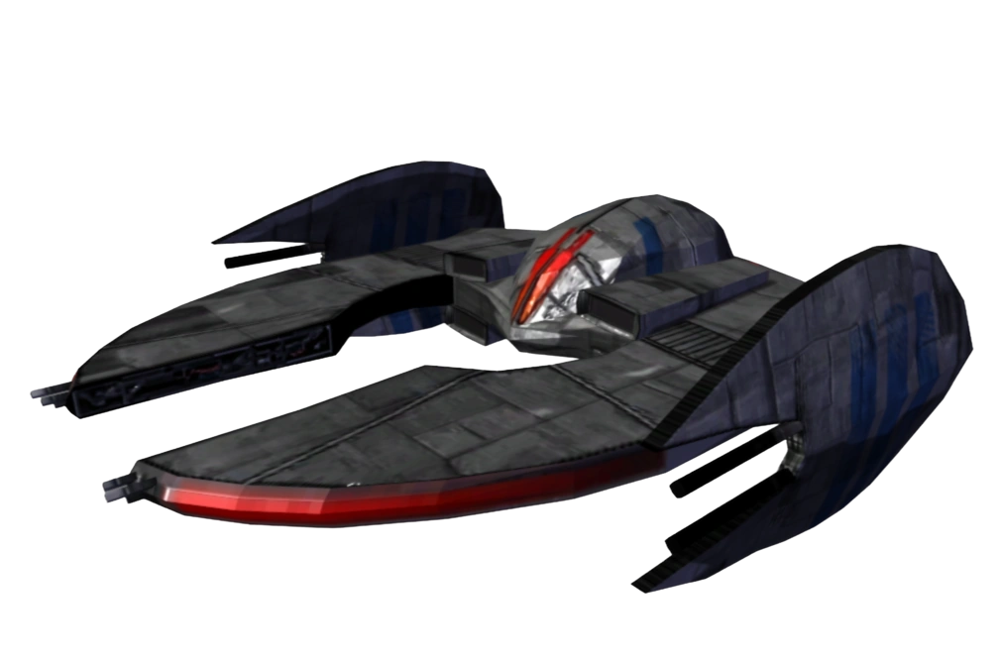
Trade Federation — дроид-бомбардировщик
Дроид-бомбардировщик Торговой Федерации был вооружен четырьмя лазерными пушками и бомбовым отсеком большой ёмкости. Несмотря на хорошую броню и экранирование, он был медленным и не обладал маневренностью. В большинстве случаев развертывался эскадрильями по пять человек.
- Производитель: Xi Char
- Вооружение: 4 лазерные пушки, бомбовый отсек
- Особенности: Хорошая броня, низкая маневренность
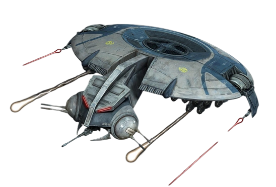
HMP — дроид-канонерка
Дроид-канонерка HMP (Heavy Missile Platform) — тяжёлый дроид-истребитель, выполнявший роль штурмовых и транспортных аппаратов КНС. Был оснащён ракетными установками и лазерными пушками, представляя серьёзную угрозу пехоте и наземной технике. Мог высаживать боевых дроидов B1 и супердроидов В2.
- Вооружение: Спаренные лазерные пушки, тяжёлая пушка, ракетные установки
- Особенности: Транспортировка дроидов
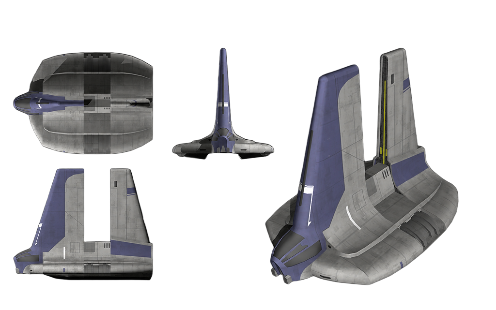
Sheathipede-class — транспортный шаттл
Транспортный шаттл класса Ножноногий, или широко известный как шаттл КНС, использовался для перевозки многих биологических лиц, таких как граф Дуку или Нут Ганрей. Имел когтистые посадочные лапы, которые могли приземляться только на твёрдые поверхности. Корабль ближнего радиуса действия, использовался для межпланетных путешествий.
- Тип: Транспортный шаттл
- Особенности: Когтистые посадочные лапы
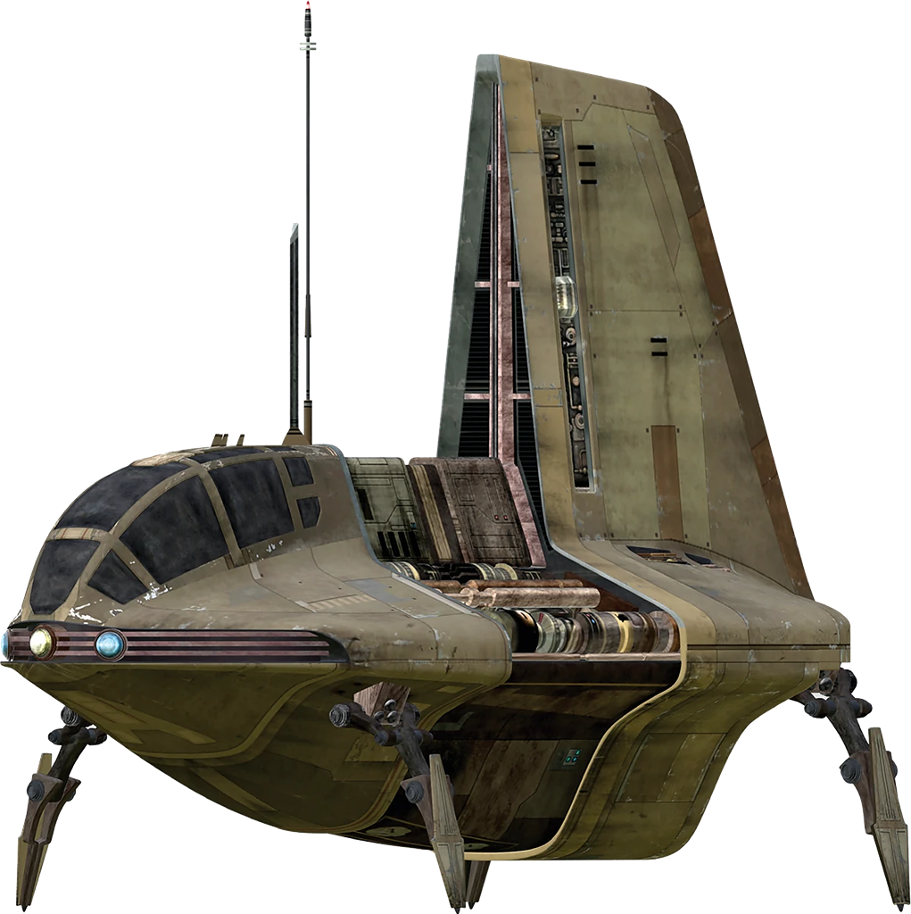
Quiver-class — транспортный шаттл «Колчан»
Транспортные шаттлы типа «Колчан» были атмосферно-орбитальными транспортами ближнего радиуса действия. Имел довольно развитый ИИ, поэтому зачастую летал на автопилоте. Перед приземлением выпускал изогнутые шасси, предназначенные только для посадок на твёрдой поверхности.
- Вместимость: 6
- Грузовместимость: 1 тонна
- Автономность: 1 неделя
- Особенности: Автопилот, развитый ИИ
Космическая техника
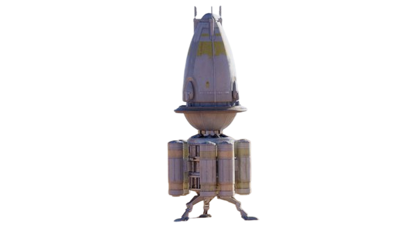
Hardcell-class — межзвёздный транспорт
Межзвездный транспорт класса Hardcell — лёгкий капитальный транспорт, произведенный Техносоюзом. Цилиндрическое судно с титановым корпусом высотой чуть более 220 метров, оснащённое кластером из шести основных двигателей. Использовал ракетную тягу для атмосферных и звёздных путешествий.
- Длина: 220+ м
- Производитель: Техносоюз
- Особенности: Ракетная тяга, вертикальная посадка
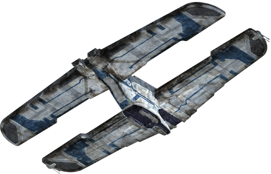
C-9979 — десантный корабль
Десантный корабль C-9979 — крупный звездолёт, предназначенный для доставки AAT, MTT и пехоты Торговой федерации на поверхность планеты. Был способен полностью разгрузиться менее чем за час. Оснащён мощной репульсорной подушкой для перевозки тяжёлых грузов.
- Тип: Десантный корабль
- Особенности: Быстрая разгрузка, мощная репульсорная подушка

Recusant-class — лёгкий эсминец
Лёгкий эсминец класса «Рекусант» — военный корабль, произведенный Инженерным корпусом добровольцев Свободного Дака. Использовался Коммерческой гильдией, а позднее КНС. Часто использовался генералом Гривусом в качестве флагмана. Четыре-шесть таких кораблей могли превзойти по огневой мощи «Венатор».
- Производитель: Инженерный корпус Свободного Дака
- Тип: Лёгкий эсминец
- Особенности: Мощное вооружение
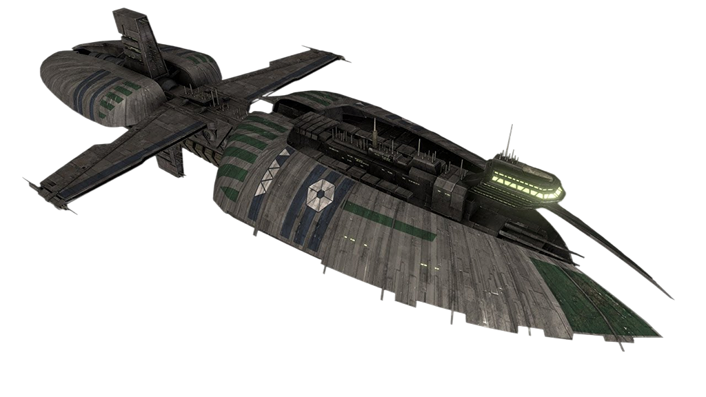
Munificent-class — фрегат
Фрегат типа «Щедрый» или фрегат Банковского клана — военный корабль, использовавшийся Межгалактическим банковским кланом и КНС. Был 825 метров в длину и имел особое строение, требующее небольшой экипаж для управления. Имел четыре сканера широкого диапазона и множество коммуникационных средств.
- Длина: 825 м
- Производитель: Межгалактический банковский клан
- Особенности: Малый экипаж
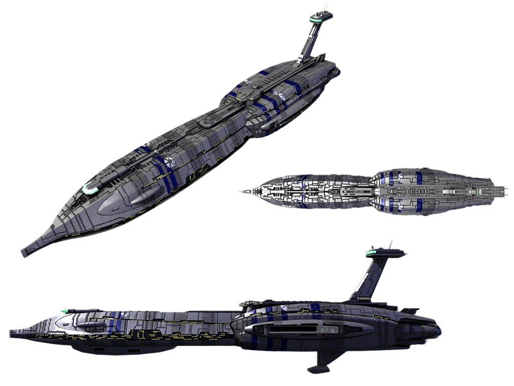
Providence-class — авианесущий разрушитель
Авианесущий разрушитель типа «Провидение» — корабль-носитель Торговой федерации и крупных кораблей КНС. Имел округлые очертания и псевдо-органическую эстетику. Корабли были массивными, цилиндрическими, 1088-метровыми судами с острым носом. Экипаж состоял из 600 дроидов.
- Длина: 1 088 м
- Экипаж: 600 дроидов
- Особенности: Псевдо-органический дизайн
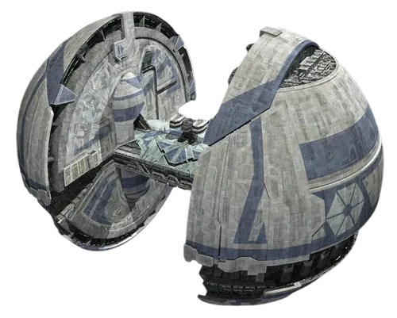
Separatist supply ship — корабль снабжения
Сепаратистский корабль снабжения — массивный транспортный корабль, использовавшийся КНС. Был шириной более тысячи метров и вмещал несколько ангаров для десантных кораблей C-9979. Был способен вмещать более пяти миллионов метрических тонн грузов. Управлялся боевыми дроидами B1.
- Ширина: 1000+ м
- Грузовместимость: 5 млн тонн
- Особенности: Множество ангаров
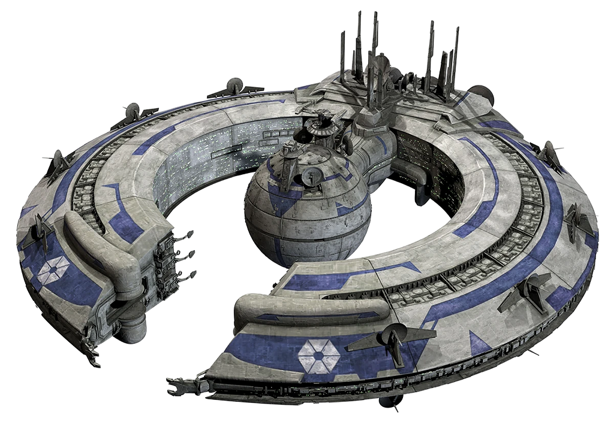
Lucrehulk-class — линейный корабль
Линейный корабль типа «Барышник» — основной корабль Торговой федерации. Огромное судно, более трех километров в диаметре, напоминало плоский диск с центральной сферой. Диск был разомкнут спереди, открывая два гигантских посадочных дока. Не были предназначены для посадки на планеты.
- Диаметр: 3000+ м
- Тип: Линейный корабль
- Особенности: Гигантские посадочные доки
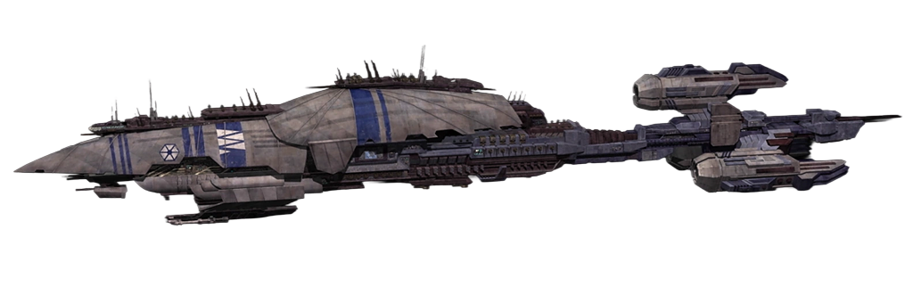
Rebel-class — лёгкий разрушитель
Лёгкий разрушитель типа «Бунтарь» — сконструирован для борьбы с республиканскими «Венаторами» и дополнительной поддержки флота. Мостик размещён на киле, что свойственно сепаратистским кораблям. Основан на украденных куарренами технологиях мон-каламари. В основном производится на верфях Техносоюза.
- Производитель: Верфи Техносоюза
- Тип: Лёгкий разрушитель
- Особенности: Мостик на киле, технологии мон-каламари